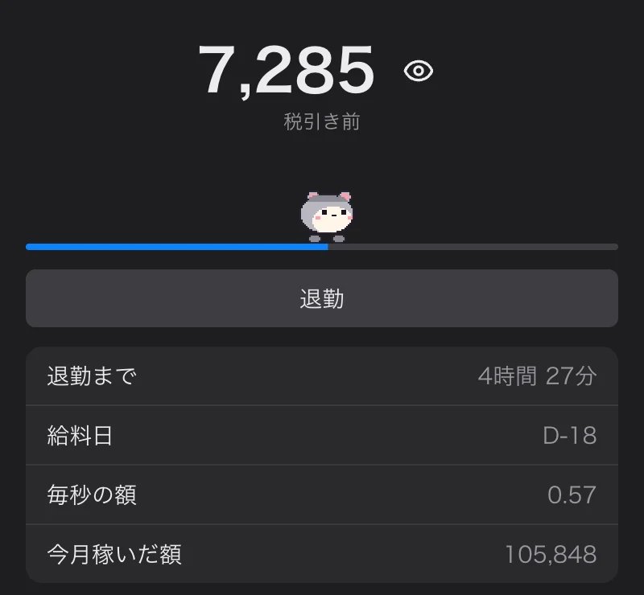
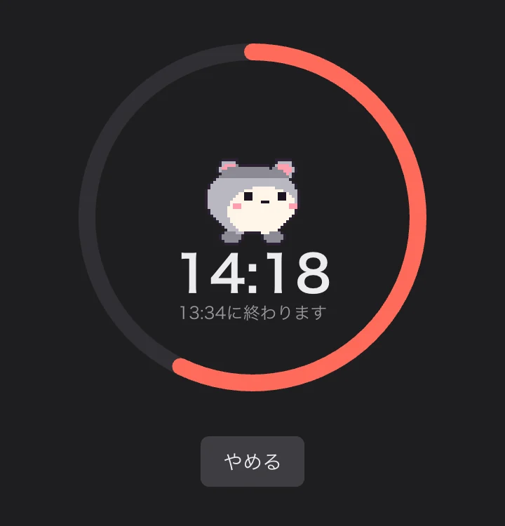

チャット
言った言葉が頭の上に
チャットに書いた言葉が、友だちの画面にいる自分のキャラの上に吹き出しで浮かびます。返信、リアクション、編集、既読まで。
書いた言葉が友だちの画面で自分のキャラの頭上に浮かびます。
チャットに書いた言葉が、友だちの画面にいる自分のキャラの上に吹き出しで浮かびます。返信、リアクション、編集、既読まで。
チャットに写真を何枚も、GIF検索、リンクのプレビュー。
描いて送るとグループ全員に届きます。送った友だちの耳の横に巻物が現れて、押すと描いた順にもう一度描かれます。
言葉と写真はロックして送り、24時間後に消えます。広告も分析ツールもありません。
友だちのキャラを押して、引っぱって、なでましょう。
友だちのキャラをクリックすると、選んだアイテムが放物線を描いて飛んで当たります。
上でマウスを振るとハートがぽんぽん。
ごはんをあげ続けると少しずつ大きくなって、1分の間に10回くらい食べるとうんちをします。ほうきで掃いて片づけます。
:エモート: を言葉に混ぜたり、あいさつ・うれしい・もぐもぐ・ジャンプの動作。
自分のキャラと吹き出しは自分で選べます。
画像AIからもらった1枚の絵や自分で描いた絵で、キャラクター・アイテム・エモートを作ります。 作り方
ハロウィンにはジャックオランタンを押すとキャンディが飛び出し、自分の吹き出しの色とかざりは自分で選びます。
仕事のあいだ、そばで見守ります。
今日稼いだ額が秒単位で増えていきます。自分のキャラの上にも表示でき、金額はショートカットで隠せます。年収はこの端末にだけ保存します。

15・25・50分か終わる時刻を決めると、その間は友だちのキャラを隠します。友だちの画面には「没頭中」と出て、投げると「しーっ！」と言います。

マウスを乗せるとその友だちのステータスが見えます。離席すると z、長く離れると Zzz、アプリを閉じると薄くなります。
インストールなしでスマホのブラウザから同じ部屋へ。スマホから入った友だちは、パソコン画面の体の上に青い魂として浮かびます。
会社の友だち、ご近所の友だち。グループを行き来して、チャットは窓ごとに別のグループを見られます。
クリックしたり、ドラッグしたり、言葉で呼んだり、メニューから選んだりするものです。
話す
遊ぶ
かざる
見守る
全部のリストはアプリのトレイメニューの 機能一覧… で見られます。
無料で使えます。アップロードできるキャラとアイテムの数には上限があります。招待コードをもらうか、新しいグループを作ります。
無料で使えます。アップロードできるキャラとアイテムの数には上限があります。
言葉と写真はロックして送るので、社内ネットワークのような途中の経路では内容が見えません。24時間後には消えます。
スマホではウェブで同じ部屋に入ります。キャラで遊ぶのはパソコンのアプリです。
はい。絵をアップロードするか AI に頼んで作れます。作り方 のページを見てください。
ダウンロード欄の下にある SHA-256 と見比べてください。Windows は PowerShell で Get-FileHash <パス>、Mac はターミナルで shasum -a 256 <パス> で確認できます。
Mac はシステム設定 > プライバシーとセキュリティで「このまま開く」、Windows は「詳細情報」>「実行」を押してください。